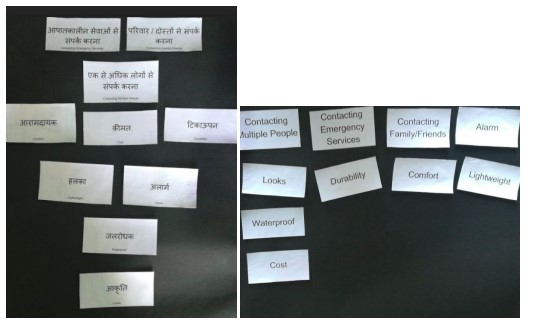
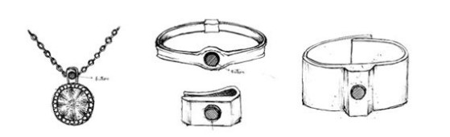
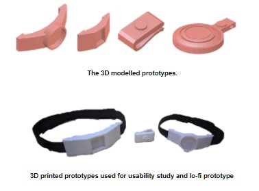
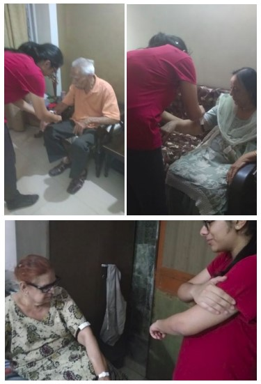
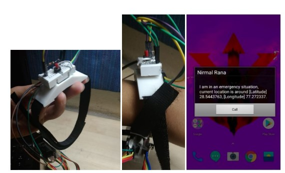

Panic Button
Panic/Safety Button For Aging Population in India
Motivation
People above the age of 65 who live alone or are at home alone for extensive periods of time, are at a risk of health and security risks. These include injuries in the washroom, emergencies such as heart attacks and events such as theft and robbery. The current emergency system is latent and has not suitably penetrated the demographic it targets. Moreover, it is rarely operational, taxing to the user base and characterised with high probabilities of false alarm. Due to the above mentioned issues faced by the elderly, I along with a team of 5 classmates of mine, decided to design and develop a panic button for this targeted population and take a step towards a nation that is more socially secure.
User Demographic
Aims:
> People who have retired
> Elderly who live alone or are living in a household where they tend to be left alone for a majority of the day
> People not comfortable with using the current form of panic button that comes embedded as specialised applications in the mobile phone
Feature Prioritisation

Paper Sketches and Prototypes
We explored some common variables that could be used to include a panic button.

Then we 3D modelled the paper prototypes and got them 3D printed for a usability study with the participants.
Usability Study

Working Prototype and App
We programmed the button using Arduino and the App was prototyped on MIT App Inventor. The app was designed to detect signals sent via a bluetooth connection. Upon receiving the signal of distress, the mobile would raise an alarm and show a popup with the name and location of the person in distress. The mechanism was programmed to work even if the phone was not being used or on silent mode.
